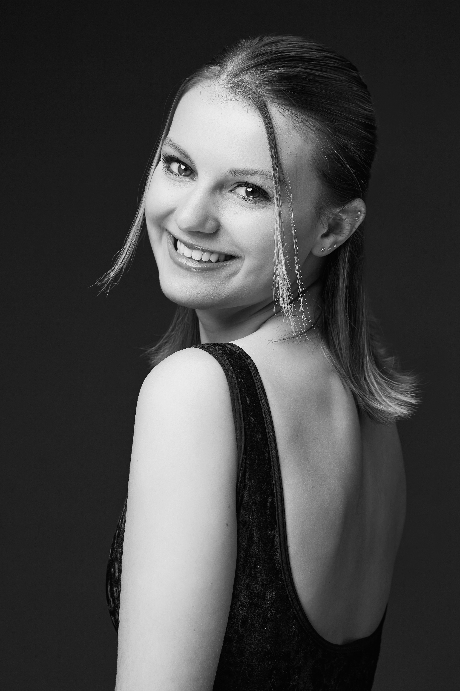
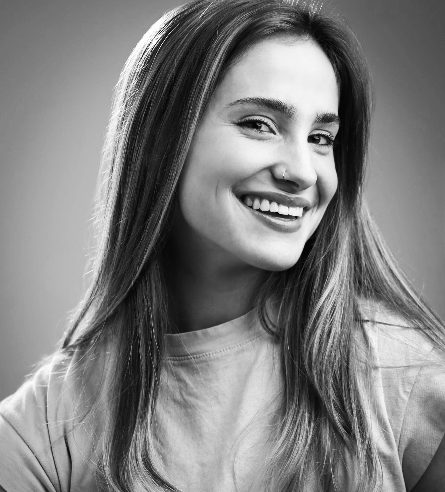
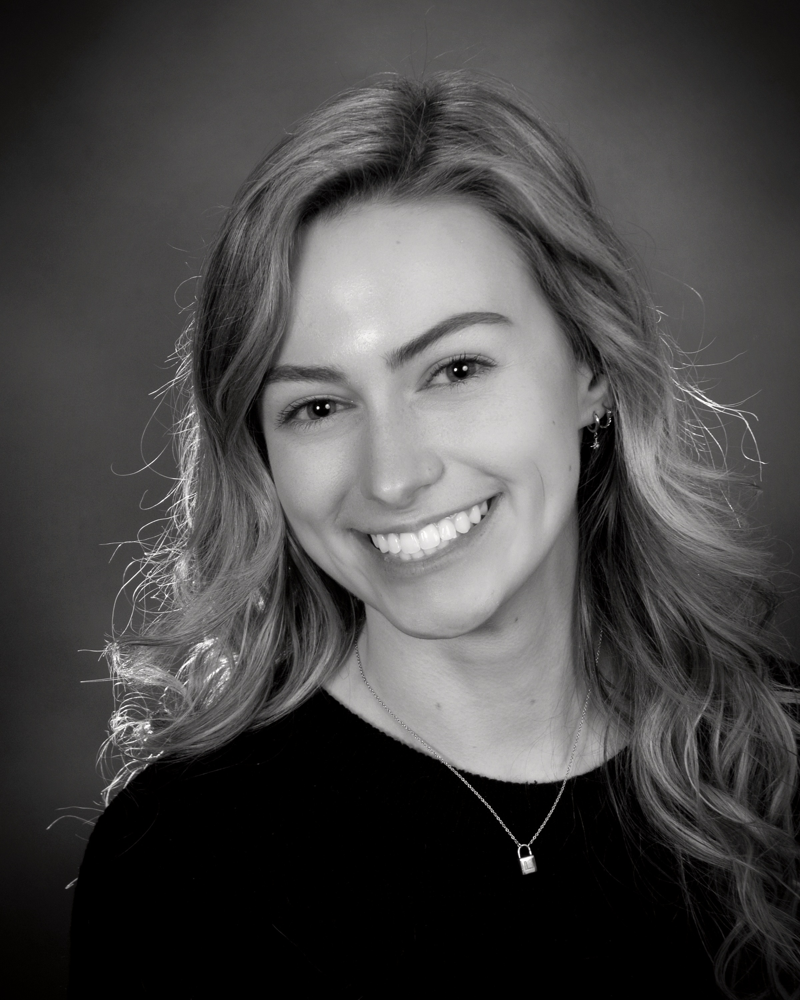

Meet the Company
Company Members
The dancers and artists of confluence contemporary ballet.

Aubrie Rosenkoetter
Founder, Choregrapher, & Dancer
Aubrie Rosenkoetter, originally from Idaho, began her training in ballet, tap, and modern at Ballet Idaho and Eagle Performing Arts Center. She performed with Idaho Regional Ballet and participated in Regional Dance America, further developing her passion for dance. Over the summers, Aubrie attended intensive programs at American Ballet Theatre, Kansas City Ballet, BalletMet, and Oregon Ballet Theatre. She earned her BFA in Ballet from Texas Christian University, where she discovered a love for choreography, teaching, and costume design.
After graduation she returned to Idaho to join Idaho Dance Theatre as a company member. Aubrie then moved to England to pursue a Master’s degree in Costume Making at the Liverpool Institute for Performing Arts. While there, she performed in the musical Oklahoma! and danced with Sole Rebel Tap Company. Aubrie is now a faculty member and Costume Mistress at Cary Ballet, where she shares her passion for dance, creativity, and the performing arts with the next generation.

Maggie-Kate Cunningham
Choregrapher & Dancer
Maggie-Kate (Howard) Cunningham began her training at age 4 at Dallas Ballet Center. At age 17 she became a trainee at Avant Chamber Ballet in Dallas, TX. She attended Booker T. Washington High School for the Performing and Visual Arts in Dallas, TX and graduated with the Kevin Brown Award for Outstanding Performance in Ballet. She has attended American Ballet Theater, Pacific Northwest Ballet, and Carolina Ballet summer-intensive programs.
After graduating high school, Maggie-Kate joined the School of Carolina Ballet in Raleigh, NC on full scholarship as a pre-professional student. In 2021 she signed a professional contract with Carolina Ballet and danced with the company until May of 2024. Maggie-Kate is passionate about all dancers receiving quality ballet training and she is currently the Ballet Faculty member at Sallie B Howard School for the Arts and Sciences.

Brooke Raschke
Dancer
Brooke Raschke began dancing at age 3 and has competed at dance competitions throughout her childhood and teenage years, training in styles including ballet, tap, jazz, lyrical, contemporary, hip hop, and poms. Growing up in Cranberry Township, PA, she trained at Evolve Dance Complex from ages 12–14, where she won a Jazz scholarship at the VIP Dance Competition. At 15 she joined Star Styled Dance Center, where she became captain of the elite competition group as a senior. The same year, she led the dance "It's All a Simulation" to four first overall titles.
After high school, she pursued a bachelor's and master's degree in computer science at NC State University, where she continued dancing by joining the student-run ballet club, Studio 804. She later moved to Boulder, CO for work, where she had the opportunity to study Vaganova ballet under Elizabeth Ross. Since returning to Raleigh, Brooke has been focused on improving her ballet technique and performing whenever the opportunity arises.